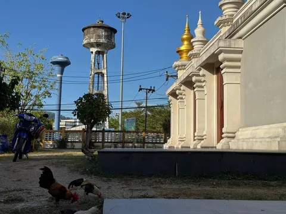
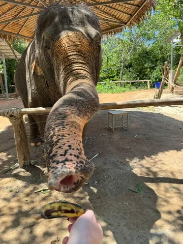
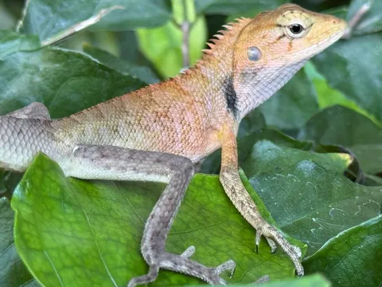

2026-03-10 06:52 UTC Таиланд Я вернулся. Сегодня много рассказывать не буду, да и вряд ли я кого-то удивлю чем-то. Просто поделюсь несколькими фотографиями. 526 просмотров · 23 реакций Открыть в Telegram · К списку постов · Ссылка на этот пост